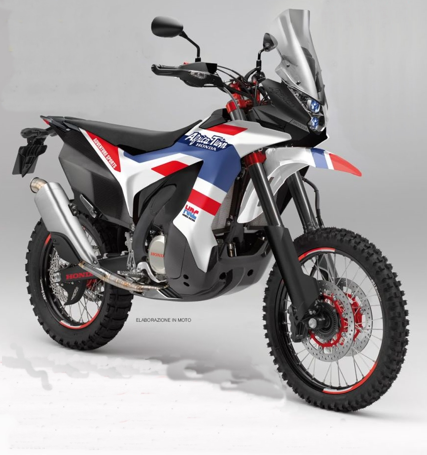

Honda Africa Twin
Avaldatud: 07.05.2025

Testimiskoht: Põhja-Eesti kruusateed ja metsavaheteed.
Mis meeldis?
- Väga hea juhitavus ka lahtisel pinnasel ja kruusal.
- Adventure-stiilis disain ja mugav sõiduasend.
- Hea vedrustus ja löökide summutus ebatasasel maastikul.
- Hästi toimiv elektroonika – sõidurežiimid, ABS, TC.
Mis ei meeldinud?
- Veidi lärmakas summuti suurematel pööretel.
- Kütusekulu maastikul sõites oli oodatust kõrgem.
Honda Africa Twin sobib suurepäraselt Eesti mitmekesistesse teeoludesse – olgu selleks asfalt, kruus või metsavahe. Sõit oli nauditav ja üllatavalt stabiilne igas olukorras!
Märksõnad: Honda, Africa Twin, seiklus, proovisõit, kruusatee, Põhja-Eesti